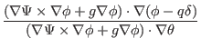
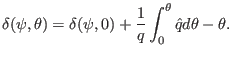
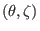
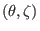

Next: Contravariant form of magnetic Up: Magnetic surface coordinates general Previous: Magnetic surface coordinates general
In Sec. 5.1, we introduced the local safety factor  .
Equation (179) indicates that if the Jacobian is chosen to be of the
form
, where
.
Equation (179) indicates that if the Jacobian is chosen to be of the
form
, where
 is an arbitrary
function of
is an arbitrary
function of  , then the local safety factor is independent of
, then the local safety factor is independent of  and , i.e., magnetic line is straight in
and , i.e., magnetic line is straight in
 plane. On the
other hand, if we want to make field line straight in
plane. On the
other hand, if we want to make field line straight in
 plane,
the Jacobian must be chosen to be of the specific form
. We note that, as mentioned in Sec. 5.2, the poloidal
angle is fully determined by the choice of the Jacobian. The specific choice
of
is usually too restrictive for choosing a
desired poloidal angle (for example, the equal-arc poloidal angle can not be
achieved by this choice of Jacobian). Is there any way that we can make the
field line straight in a coordinate system at the same time ensure that the
Jacobian can be freely adjusted to obtain desired poloidal angle? The answer
is yes. The obvious way to achieve this is to define a new toroidal angle
plane,
the Jacobian must be chosen to be of the specific form
. We note that, as mentioned in Sec. 5.2, the poloidal
angle is fully determined by the choice of the Jacobian. The specific choice
of
is usually too restrictive for choosing a
desired poloidal angle (for example, the equal-arc poloidal angle can not be
achieved by this choice of Jacobian). Is there any way that we can make the
field line straight in a coordinate system at the same time ensure that the
Jacobian can be freely adjusted to obtain desired poloidal angle? The answer
is yes. The obvious way to achieve this is to define a new toroidal angle
 that generalizes the usual toroidal angle . Define the new
toroidal angle
that generalizes the usual toroidal angle . Define the new
toroidal angle  as[6]
as[6]
|  | |||
| (236) |
| (238) |
|  | (241) |
| (243) |
In summary, the field line is straight (with slope being  ) on
 plane if
) on
 plane if  is defined by Eq. (244). In this method,
we make the field line straight by defining a new toroidal angle, instead of
requiring the Jacobian to take particular forms. Thus, the freedom of choosing
the form of the Jacobian is still available to be used later to define a good
poloidal angle coordinate.
is defined by Eq. (244). In this method,
we make the field line straight by defining a new toroidal angle, instead of
requiring the Jacobian to take particular forms. Thus, the freedom of choosing
the form of the Jacobian is still available to be used later to define a good
poloidal angle coordinate.
[In numerical implementation, the term
appearing in  is computed by using
is computed by using
| (245) |
![[*]](crossref.png) ), we obtain
), we obtain
It is ready to see that the function , which is introduced above to make , satisfies the periodic condition . [Proof: Equation (242) implies that
| (247) |
yj 2018-03-09